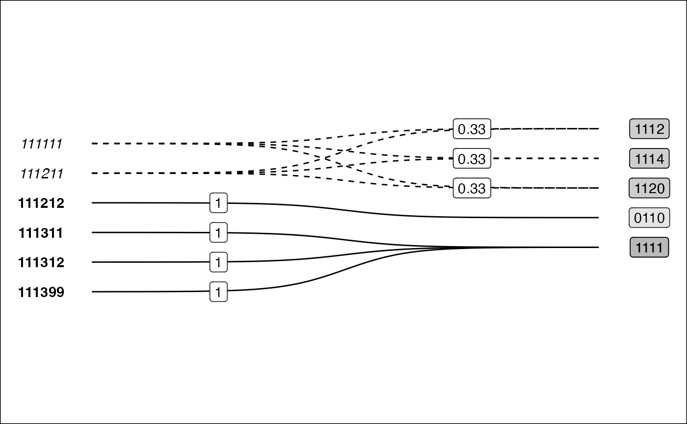

Alternative representations of Crossmaps
Crossmaps aim to encode dataset integration and harmonisation choices separately to the code used to apply those such designs to data. It follows that visualisations and plots of the candidate crossmaps could be useful during the design process. For instance, Sankey diagrams are sometimes used to visualise schema crosswalks.
This article provides a few ggplot2 code examples for visualising
crossmaps. The package will offer functions for generating these
visualisations from xmap objects in future releases.
Table
Let’s start with visualising a section of the ANZSCO22 to ISCO8 crosswalk published by the Australian Bureau of Statistics:
anzsco_cw <- tibble::tribble(
~anzsco22, ~anzsco22_descr, ~isco8, ~partial, ~isco8_descr,
"111111", "Chief Executive or Managing Director", "1112", "p", "Senior government officials",
"111111", "Chief Executive or Managing Director", "1114", "p", "Senior officials of special-interest organizations",
"111111", "Chief Executive or Managing Director", "1120", "p", "Managing directors and chief executives",
"111211", "Corporate General Manager", "1112", "p", "Senior government officials",
"111211", "Corporate General Manager", "1114", "p", "Senior officials of special-interest organizations",
"111211", "Corporate General Manager", "1120", "p", "Managing directors and chief executives",
"111212", "Defence Force Senior Officer", "0110", "p", "Commissioned armed forces officers",
"111311", "Local Government Legislator", "1111", "p", "Legislators",
"111312", "Member of Parliament", "1111", "p", "Legislators",
"111399", "Legislators nec", "1111", "p", "Legislators"
)
links <- anzsco_cw |>
dplyr::group_by(anzsco22) |>
dplyr::summarise(n_dest = dplyr::n_distinct(isco8)) |>
dplyr::ungroup() |>
dplyr::transmute(anzsco22, weight = 1/n_dest) |>
dplyr::left_join(anzsco_cw, by = "anzsco22")
## get code tables
table_anzsco <- anzsco_cw |>
dplyr::distinct(anzsco22, anzsco22_descr)
table_isco8 <- anzsco_cw |>
dplyr::distinct(isco8, isco8_descr)
## make xmap
anzsco_xmap <- links |>
as_xmap_df(anzsco22, isco8, weight)## Dropped additional columns in `links`The included print() method for xmap_df
objects:
print(anzsco_xmap)## xmap_df:
## recode, split, and collapse
## (anzsco22 -> isco8) BY weight
## anzsco22 isco8 weight
## 1 111111 1112 0.3333333
## 2 111111 1114 0.3333333
## 3 111111 1120 0.3333333
## 4 111211 1112 0.3333333
## 5 111211 1114 0.3333333
## 6 111211 1120 0.3333333
## 7 111212 0110 1.0000000
## 8 111311 1111 1.0000000
## 9 111312 1111 1.0000000
## 10 111399 1111 1.0000000Bigraph
Visualisation as a bigraph is particularly useful for seeing the relations between the two nomenclature.
.bigraph_add_link_style <- function(edges, x_attrs, ...) {
## generate out link type
style_out_case <- tibble::tribble(
~out_case, ~line_type, ~font_type,
"unit_out", "solid", "bold",
"frac_out", "dashed", "italic")
edges |>
dplyr::mutate(out_case = dplyr::case_when(.data[[x_attrs$col_weights]] == 1 ~ "unit_out",
.data[[x_attrs$col_weights]] < 1 ~ "frac_out")) |>
dplyr::left_join(style_out_case,
by = "out_case") |>
dplyr::ungroup()
}
.bigraph_add_node_positions <- function(edges, x_attrs, pos_from, pos_to, ...) {
## attach node positions
edges |>
dplyr::left_join(pos_from, by = setNames("from_set", x_attrs$col_from)) |>
dplyr::left_join(pos_to, by = setNames("to_set", x_attrs$col_to)) |>
dplyr::mutate(from_x = 0,
to_x = 5) |>
dplyr::mutate(idx = dplyr::row_number())
}
plt_xmap_bigraph <- function(x, ...) {
stopifnot(is_xmap_df(x))
x_attrs <- attributes(x)
edges_short <- tibble::as_tibble(x)
df_out_style <- .bigraph_add_link_style(edges_short, x_attrs)
## generate node positions
from_nodes <- tibble::tibble(from_set = x_attrs$from_set) |>
dplyr::mutate(from_y = dplyr::row_number())
to_nodes <- tibble::tibble(to_set = unique(x[[x_attrs$col_to]])) |>
dplyr::mutate(to_y = dplyr::row_number() - 1 + 0.5)
df_gg <- .bigraph_add_node_positions(df_out_style, x_attrs,
from_nodes, to_nodes)
## build ggplot
ggplot2::ggplot(data = df_gg,
aes(x = from_x, xend = to_x,
y = from_y, yend = to_y,
group = idx)) +
## edges
ggbump::geom_sigmoid(aes(linetype = I(line_type))) +
ggplot2::geom_label(data = dplyr::filter(df_gg, out_case == "unit_out"),
aes(x = (from_x + to_x) / 4,
y = from_y,
label = round(.data[[x_attrs$col_weights]], 2))) +
ggplot2::geom_label(data = dplyr::filter(df_gg, out_case == "frac_out"),
aes(x = (((from_x + to_x) / 2) + to_x) / 2,
y = to_y,
label = round(.data[[x_attrs$col_weights]], 2))) +
## from nodes
ggplot2::geom_text(aes(x = from_x - 0.5, y = from_y,
label = .data[[x_attrs$col_from]],
fontface=I(font_type)),
## drop idx groups to avoid duplicate labels
stat = "unique", inherit.aes = FALSE) +
## to nodes
ggplot2::geom_label(aes(x = to_x + 0.5, y = to_y,
label = .data[[x_attrs$col_to]]),
fill = "black",
alpha = 0.1) +
ggplot2::scale_y_reverse() +
ggplot2::theme_minimal() +
theme(legend.position = "bottom",
panel.grid.major = element_blank(),
panel.grid.minor = element_blank(),
axis.text.y = element_blank(),
axis.text.x = element_blank(),
plot.background = element_rect(fill = "white")) +
labs(x = NULL, y = NULL)
}
|
|
This visualisation also has benefits over the traditionally used Sankey diagram. Sankey diagrams are often used to illustrated “flows” between nodes. However, variable link widths can actually clutter the visualisation of crosswalks. Consider this simple crossmap that might be used to harmonise national accounts data (e.g. GDP) across two time periods.
edges <- tribble(~ctr, ~ctr2, ~split,
"BLX", "BEL", 0.5,
"BLX", "LUX", 0.5,
"E.GER", "DEU", 1,
"W.GER", "DEU", 1)
On the other hand, the bigraph visualisation shows more clearly how data is modified (or not) when harmonising between nomenclature. The solid lines show when a link does not modify the source values, whilst the dotted line style indicates that data will be split up. Furthermore, by using fixed width links, there is room to place labels on-top of each curve indicated the transformation weights.

Matrix
Another useful visualisation or representation of a crossmap is as an incidence matrix with the source nomenclature indexed along the rows and the target nomenclature indexed on the columns:
plt_xmap_ggmatrix <- function(x, ...){
stopifnot(is_xmap_df(x))
x_attrs <- attributes(x)
edges_complete <- tibble::as_tibble(x) |>
tidyr::complete(.data[[x_attrs$col_from]], .data[[x_attrs$col_to]])
## add link-out type
gg_df <- edges_complete |>
dplyr::mutate(out_case = dplyr::case_when(.data[[x_attrs$col_weights]] == 1 ~ "one-to-one",
.data[[x_attrs$col_weights]] < 1 ~ "one-to-many",
is.na(.data[[x_attrs$col_weights]]) ~ "none")
)
## make plot
gg_df |> ggplot(aes(x=.data[[x_attrs$col_to]],
y=.data[[x_attrs$col_from]])) +
geom_tile(aes(fill=out_case), col="grey") +
scale_y_discrete(limits=rev) +
scale_x_discrete(position='top') +
scale_fill_brewer() +
coord_fixed() +
labs(x = x_attrs$col_to, y = x_attrs$col_from, fill="Outgoing Link Type") +
theme_minimal() +
geom_text(data = dplyr::filter(gg_df, !is.na(.data[[x_attrs$col_weights]])), aes(label=round(.data[[x_attrs$col_weights]], 2))) +
theme(legend.position = "bottom",
panel.grid.major = element_blank(),
panel.grid.minor = element_blank()
)
}
plt_xmap_ggmatrix(anzsco_xmap)
Notice that the requirement that a valid crossmap has outgoing weights which sum to 1 for each source node is equivalent to a requirement that the total of weights across each row sums to 1.